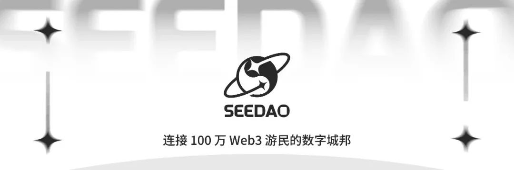
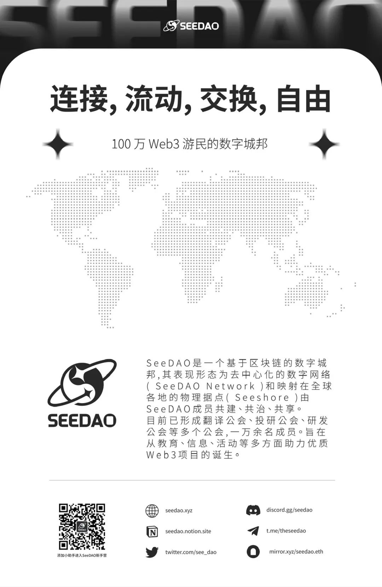

“在一个信奉公地自由使用的社会里，每个人追求他自己的最佳利益，毁灭是所有人趋之若鹜的目的地。” 上世纪60年代，生物学家加勒特·哈丁在《科学》杂志上如是写道。
公地悲剧自古有之。属于最多数人的、为多数人创造正向效益的公共事物，却往往受到最少的关注和贡献。谈及公共物品治理，历史经验要么诉诸于利维坦，即中心化集权治理，但这建立在信息准确、监督能力强、制裁可靠有效以及行政费用为零的基础上，要么诉诸于私有化，但是有些流动性资源的产权并不能精确分割，即使产权明确分割，风险也未必能按比例分布。
区块链与公共物品治理紧密相连。《公共事务的治理之道》作者、09年诺贝尔奖得主奥斯特罗姆曾指出，由于现实中其实极少存在可以依靠单一方案就可以解决的公共物品治理问题，除了利维坦和私有化外，还存在着第三种可能更优的基于社区的治理途径：由社区成员结合手中信息，自主设计合约，进行自主治理。在更加广大的跨国数字社区中，区块链作为一种无需信任的协作机制，正是实践这一治理方式的最佳工具。
在华语世界，由于历史和现实的种种原因，我们对于什么是“公共物品”，如何建设和治理“公共物品”的经验，相比于英语世界要更加欠缺。在加密世界中，华语生态圈创造了很多优秀的应用，打造了很多优秀的经济模型，但是，提及公共物品，无论是理论还是实践，我们代表性的高质量项目仍然稀少。因此，Gitcoin第18轮Grants期间，全球华人社区GCC决定发起“Global Chinese Community for Public Goods”的专题捐赠，设立 25000 美元奖金池，对参与GR18并报名参与这一专题轮次的项目进行配捐。
什么是GCC？
GCC的全称为Universal Digital Commons of Global Chinese Community，我们致力于打造一个全球数字公地的华人建设者社区，为这一领域的华人建设者提供激励，吸引更多的建设者参与其中，同时也带动更多的资金支持流入其中，改变目前华语区参与贡献区块链公共物品较少、支持资金不足的现状。
GCC此前曾资助过Gitcoin Grants 15，Gitcoin Grants Beta Round等，我们捐赠的代表项目有Soul Wallet, WTF Academy, ChainEye等。
什么是Gitcoin Grants 18专题捐赠，如何参与？
Gitcoin捐赠计划是由Gitcoin DAO运营的季度性计划，赋予了web3领域的普通信仰者们推动资金流向他们认为重要的项目的权力。通过使用二次方捐赠（QF）分配机制，使个人捐赠的影响力得以放大。
Gitcoin Grants 18即第18期捐赠计划，其中核心捐赠的申请截止日期是8月15日，早鸟截止日期是8月11日午夜。专题捐赠是指由Gitcoin之外的项目经理负责决策、协调和执行的回合。它们由Gitcoin团队进行选择，并且必须符合一定的标准。
此次GCC发起名为Global Chinese Community for Public Goods的专题捐赠，申请链接为：
https://builder.gitcoin.co/#/chains/10/rounds/0x30c381033aa2830ceb0aa372c2e4d28f004b3db9
考虑到我们的专题捐赠启动时间较晚，我们将合并“Global Chinese Community for Public Goods”专题捐赠申请阶段和捐赠阶段的截止日期，日期如下所示
申请期: 2023/08/01(12:00 UTC)-2023/08/29( 12:00 UTC)
捐赠期: 2023/08/15(12:00 UTC)-2023/08/29( 12:00 UTC)
当然，我们鼓励项目在8月15日以前完成申请，这意味着您的捐赠将保证在本轮活动开始前得到审核。
我们期待怎样的项目？
1.Eth Infra/以太坊基础设施项目
无论是zk、Layer2、存储、节点服务，还是数据索引、钱包，我们鼓励越来越多的华语建设者投入以太坊社区的国际大家庭，贡献自己的力量
2.DeSci/去中心化科学
这是我们认为目前华语世界最为欠缺的公共物品领域之一。在英语世界，我们看到有专注于生命科学研究的VitaDAO, 专注于药物研究的Molecule等等存在，且拿到了相当数额的融资，目前在华语世界尚无同等体量的案例出现。我们也希望各个专业的科研工作者可以投身其中，建设华语世界的DeSci组织
3.Security & Anti-fraud/ 安全和反欺诈
尽管这一领域已经有了较为成熟的商业模式如加密审计、加密安全公司等，但是，区块链安全事件层出不穷，小微个体维权尤其困难，我们期待行业能够出现更好的安全和反欺诈公共物品，也希望更多在这一行业发现、警示安全漏洞的无偿贡献者可以得到合理的回报
4.Education & Policy Advocate/教育和政策游说
我们期待加密技术加密思想的教育可以帮助将更多的华语建设者，无论是开发者、艺术家、哲学家还是其他从业人员，带入国际区块链圈，促进华语世界和其他语种的交流。同时，我们也希望看到华语世界有更加成熟的政策游说组织，推动加密友好政策的发展。
5.Decentralized Public Governance/去中心化公共治理
治理层面的开源理论研究、共识机制研究、治理工具、融资机制、声誉机制等，都可以申请这一类别，我们既需要实干家，也需要思想家，共同提升华语去中心化组织的公共治理能力
如果你的项目并不属于这几项类别，但你仍然认为你的项目是有助于华语社区公共物品建设的，也欢迎申请，我们将根据项目实际情况酌情评估。
你的项目需要满足以下条件
首先你的项目需要满足GR18项目入选的基本条件，具体请查看链接：
https://gitcoin.notion.site/GG18-Eligibility-cb4a5754c56043d4b3ed34eddbac261c
此外，项目需要满足：
●是公共物品
●团队创始人或成员至少有一人使用中文作为他们的日常交流语言；获得捐赠后，必须用于直接支持全球华语加密生态系统的建设
●项目尚未通过风险投资、代币发行或NFT销售获得大额外部资金支持
●项目不能以许诺用户因捐赠而获得某种额外独特的好处/奖励的情况来拉票
●有概念验证/产品原型，比这些更早期的项目应当在有一定积累后申请下一轮而非本轮
●获得捐赠的申请人必须直接与项目关联，捐赠使用也必须与申请捐赠时的陈述细节相符
如果你对如何申请Gitcoin Grants 18和GCC发起的专题捐赠有疑问，可以参考以下这些帮助视频和手册：
Video: How to Donate on Explorer
(https://www.loom.com/share/96cfc517dda84536a59ea07b51937372)
Video: Creating a New Passport
(https://youtu.be/l4sFKefMNj8）
Video: Renewing Your Passport
(https://youtu.be/gnZGGSC3PrM）
Grantee Onboarding Guide
(https://community.gitcoin.co/c0ac6de4b9694b17b970e5d0743e5791)
Video: How to Create Your Grant in Builder
（https://www.loom.com/share/2a27bc0ed5774c9196750d0545195c5b)
Video: How to Apply to a Gitcoin Grants Round
(https://www.loom.com/share/2dad68ece13e460c9caaf79fe33c2647）
Bridging Docs
(https://support.gitcoin.co/gitcoin-knowledge-base/gitcoin-grants/bridging-docs)
GG18 Eligibility
(https://community.gitcoin.co/gitcoin-grantee-portal/gg18-eligibility)
Guide to Promoting Your Project
(https://community.gitcoin.co/gitcoin-grantee-portal/gitcoin-grantee-marketing-toolkit)
一个可持续发展的世界需要更多的公共物品，和对公共物品的有效支持。我们期待这一愿景在华语世界继续生根发芽。如果你有志于此，赶快点击下方申请链接，我们期待和你一起共建加密世界的美好未来：
https://builder.gitcoin.co/#/chains/10/rounds/0x30c381033aa2830ceb0aa372c2e4d28f004b3db9
